교육 · 교재 · 2024–2026
교육 및 강의
가르친 것
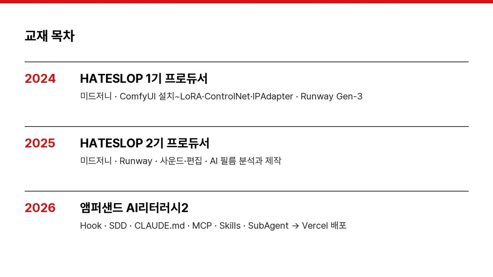
새 툴이 나오면 먼저 써 보고, 남이 따라 할 수 있게 교재를 만들어 가르쳤습니다. HATESLOP에서는 프로듀서 파트의 커리큘럼 설계부터 교재와 강의까지 혼자 맡았습니다.
HATESLOP 1기 프로듀서 커리큘럼 — 2024-09~11
| 회차 | 다룬 것 |
|---|---|
| OT 09-05 | 멀티모달 LLM과 이미지·영상 생성 모델 개론, 오픈소스와 GUI 생태계, 미드저니 세팅부터 예제 스킬까지, 포토샵 활용 |
| 1주 09-12 | ComfyUI 설치(Mac · Windows NVIDIA·AMD·Intel), Stable Diffusion과 ComfyUI, 노드·커스텀 노드, LoRA, I2I, 인페인팅, CivitAI·RunComfy, 광고 기획안 |
| 2주 09-19 | Conditioning, 업스케일, 인페인팅 · Runway Gen-3, Frames |
| 3주 09-26 | 워크플로 모듈화, ControlNet · 미드저니로 리소스를 만들어 영상화하고 편집하는 실습 |
| 4주 10-03 | Random Prompt, ControlNet, IPAdapter |
| 5주 11-17 | wildcard, IPAdapter, 모델 만들기 기초 |
학회 교재 목차에서 옮겼습니다.
제1회 AI Commercial Festival 주최 — 2024-11-09
HATESLOP 코파운더로서 KAIROS와 함께 주최하고 직접 운영한 서강대·고려대 연합 하루 해커톤입니다. 참가자 약 100명이 GS25 PB 상품의 15초 매장 TV 광고를 하루 안에 만드는 미션이었습니다.
교육자료는 미리 제작하여 배포했고, 당일에는 강의를 한 뒤 작업 시간에 자리를 돌며 멘토링 시간을 가졌습니다.
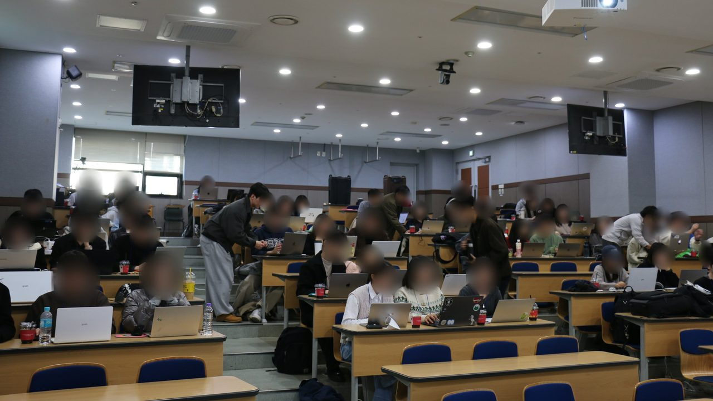
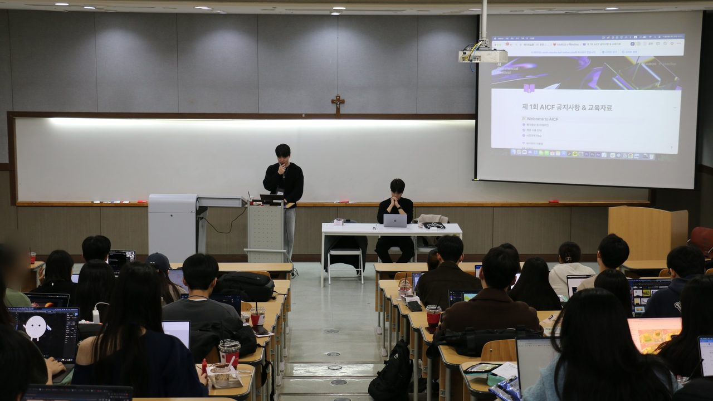
HATESLOP 2기 프로듀서 커리큘럼 — 2025-03~04
| 단계 | 다룬 것 |
|---|---|
| 기초 | AI 산업 현황과 모델·서비스 지형, 멀티모달 개념, 콘텐츠 제작 활용 사례 · 무료 AI 툴 워밍업 실습 |
| 이미지 | 미드저니 3회 — 기본기, 스타일·인물 일관성, 무드보드 |
| 영상 | Runway로 이미지를 영상으로 · 미드저니+Runway로 만드는 영상 제작 실습 |
| 사운드·편집 | 오디오 생성 AI, 음원·효과음 구하는 법, 편집 툴 |
| 심화 | AI 필름 분석 세션(각자 조사·발표) · AI 필름 제작과 편집 노하우 |
| 최종 프로젝트 | 3인 1팀 AI 필름 제작 · 국제 AI 영화제 출품 |
매 세션 그 자리에서 다 같이 실습하는 방식으로 운영했습니다.
앰퍼샌드 「AI리터러시 교육」 — 에이전트로 사이트를 만들어 배포까지
교재 실습 순서 (2026-04)
[실습] 학회 세션 신청 사이트 — Next.js + Supabase → Vercel01 git clone 템플릿 저장소 받기02 Hook 작업이 끝나면 알림을 보내는 훅03 SDD requirements.md → design.md → tasks.md, 문서 확정 전 코드 0줄04 CLAUDE.md /init, 한 세션 = 한 목표05 MCP 구글 캘린더 일정을 세션 정보로 가져오기06 Skills 되풀이하는 지시를 재사용 스킬로07 Supabase 신청 데이터 저장08 Notion API 신청·취소 기록 자동화09 SubAgent 읽기 전용 code-review 에이전트10 /push 커밋·푸시 슬래시 커맨드11 Vercel 배포학회원들이 이 교재를 따라 각자 사이트를 만들었습니다.
채널톡 임직원 출강 교재 — 「Midjourney 간단 가이드북」
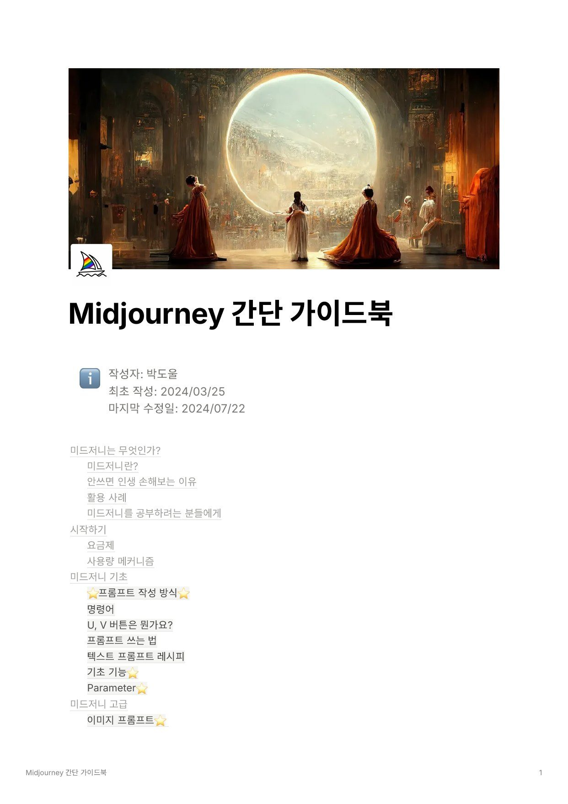
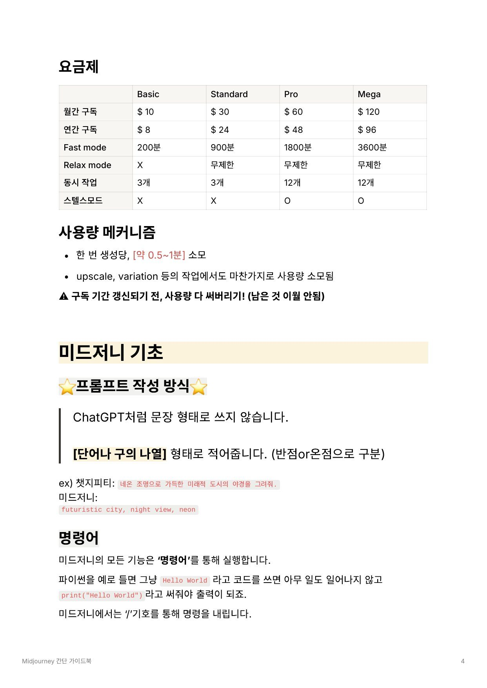
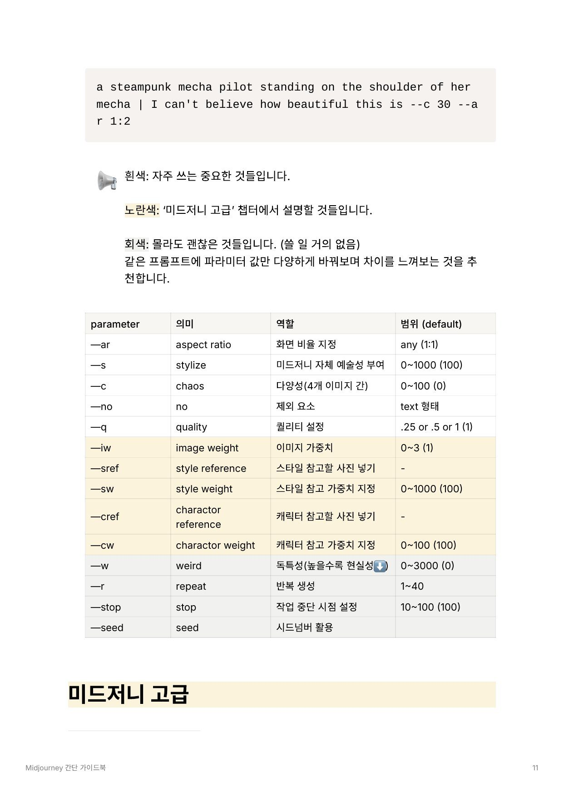
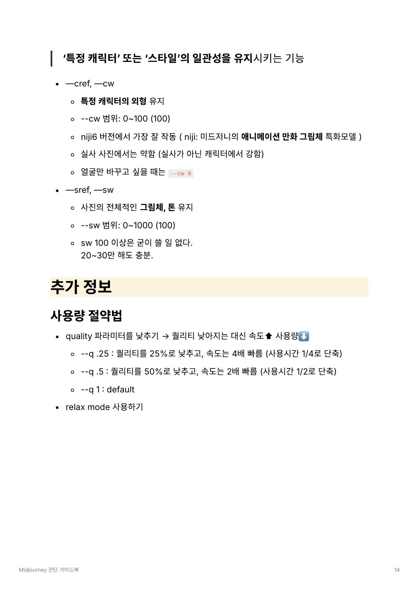
용역 첫 주에 쓴 팀 가이드라인
㈜바른손이앤에이 AI 비주얼라이징 용역(2025-08-04 ~ 11-03) 첫 주에 13쪽짜리 팀 가이드라인을 썼고, 이 문서가 팀의 제작 절차가 됐습니다. 생성 모델이 못 하는 것을 먼저 적어 기획 조건으로 삼고, 툴 배정과 씬·컷·버전 단위 파일명 규칙까지 정했습니다.
대외비로 인해, 작품 내용이 담길 수 있는 예시 쪽은 빼고 네 쪽만 싣습니다.
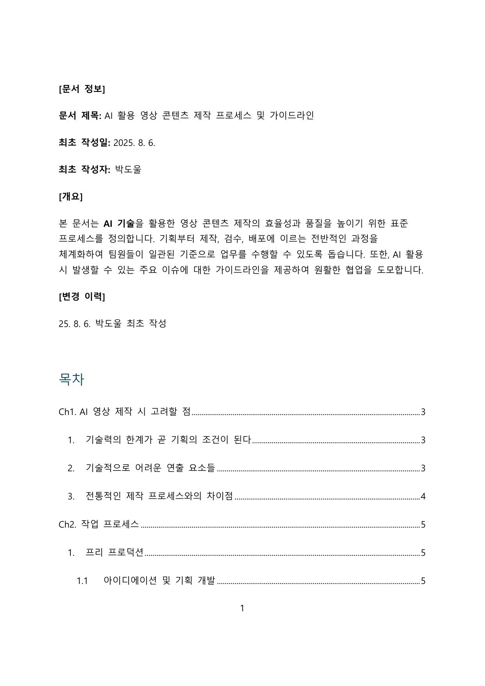
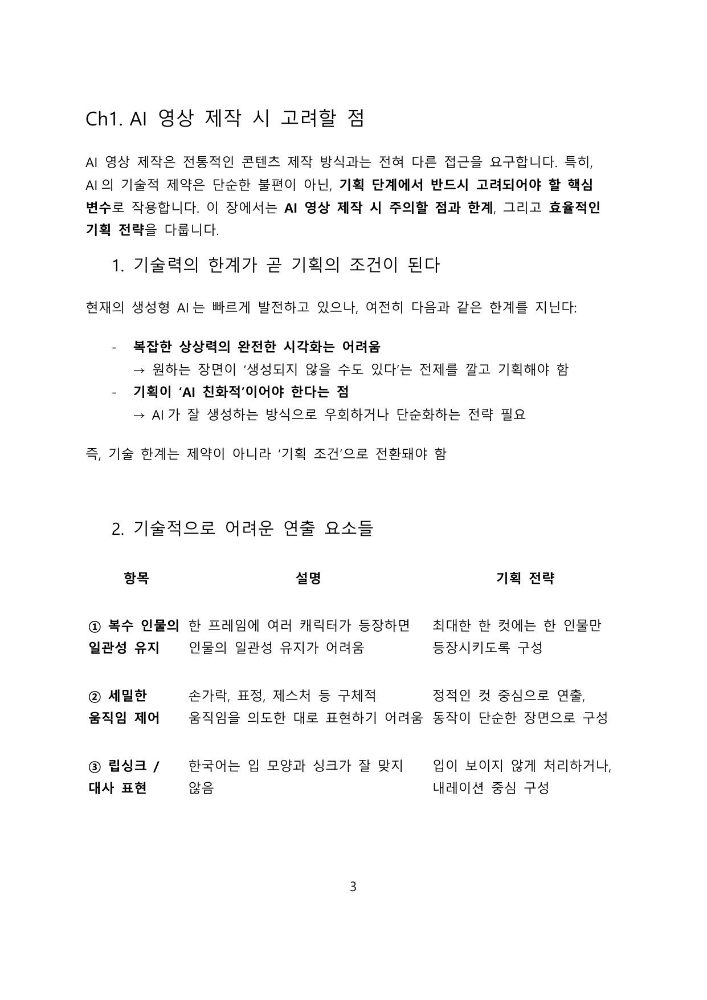
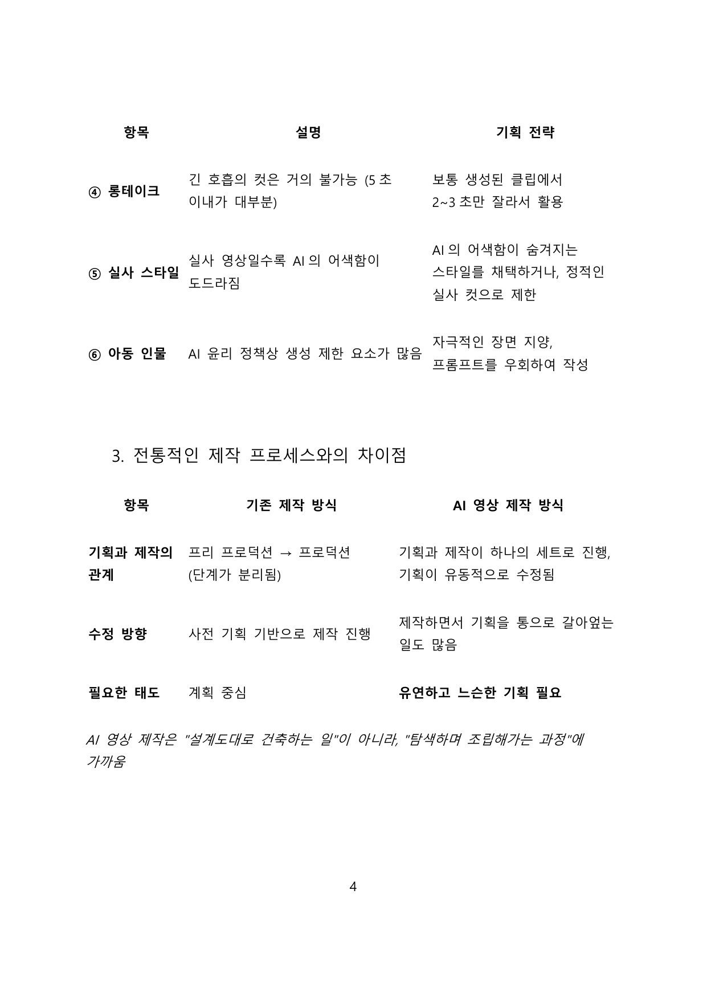
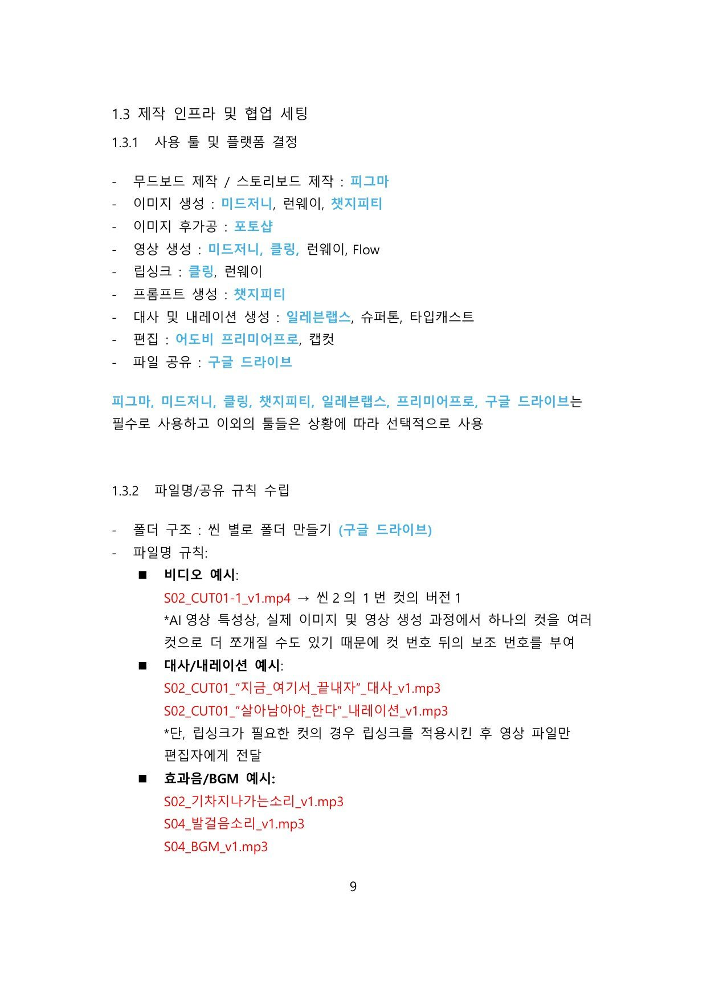
그 밖에
- 2024–25
- 채널톡 임직원 출강 · 직접 쓴 「Midjourney 간단 가이드북」
- 2025
- LG유플러스 임직원 AI 콘텐츠 제작 멘토링(05-30) · 비주얼아카데미 임직원 강의